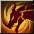
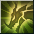
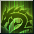
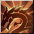
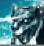
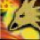
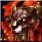

Master Breeder
Summoner Pet ClassOverview
| Role | DPS / Tank / Heal (thanks to pets) |
| Difficulty | Easy |
| Strengths | Very strong early game thanks to amazing synergy with Ethereal Pixie and Crystal Golem |
| Weaknesses | Once you reach 220 contents, the performance drops significantly |
| Why Play It | If you want to experience the summoner theme of the game, this is the class! |
Skills
Active:
- Summon Mastery Allows you to summon 2 pets at the same time
- Bestial Cry
- Grim Desire

- Defense Mastery
- Trait Mastery
- Empowering Scent

- Elemental Resistances
- Creature Mastery
- Breeder’s Synergy

- Expert Caretaker

- Holy Link
- Potency

this is your main skill in gear!
Rotation
Potency makes Master Breeder excel with 2 types of pets:
- Pets that scale with Max Mana
- Pets that scale with Max HP
Which is why the most famous combo for Master Breeder is Ethereal Pixie + Crystal Golem.
- Ethereal Pixie is your main DPS
- Crystal Golem is your tank
Main Skills of Pets
Best Skills to Use on Ethereal Pixie
- Elemental Harmony Staged toggle skill
- Blazing Storm AoE spell with DoT
- Steam Bomb AoE spell
- Scalding Rain AoE spell
- Phoenix Impact Triggers Kindling passive that boosts INT/M.Atk
- Shadow Illusion

Dethreat skill - Encouragement

+200% INT - Healing spells: Purifying Flames, Phoenix Embrace, Undine Blessing
Important passives: Otherworldly Wisdom, Mysticism (Staged), Kindling
Best Skills to Use on Crystal Golem
- Ruby Eruption High threat AoE
- Topaz Tantrum AoE stun
- Diamond Dust AoE
- Titanite Toggle that increases Threat, HP and Vitality
- Wonderstone Damage taken removed from Mana
- Threatening Essence

Threat toggle - Encouragement +100% STR/VIT
Important passives: Rhodochrosite Might, Diamond Skin, Razor Sharp Iolite, Peridot Pain (Staged)
Talent Build
| Points | Allocation |
|---|---|
| 5 TP | 2 | 0 | 3 |
| 6 TP | 2 | 1 | 3 |
| 7 TP | 2 | 2 | 3 |
Stats
| Priority | Stat |
|---|---|
| Main Stat | Critical Power |
| Sub Stat | Critical Power (140 CP stones stack with 160 CP stones) |
Accessories
| Slot | Recommendation |
|---|---|
| Rings | 2 × Rings +5 Creature Mastery from Circus / 170 rings (+20 CP) awakened with CP |
| Belt | All passives and Magical/Beneficial Deva |
Pets & Belt
| Setup | Details |
|---|---|
| Early Setup | 3 White Dragons S1 + Lion boss card |
| Full Setup | 3 White Dragons + 2 Snowman + Reviac + Mephisto + Lion / Butcher |
| Summoned Pets | Ethereal Pixie + Crystal Golem |
Gear
Progression Path
- R2 helmet +20 (all skills +1)
- 1 Crossbow with 6% P.Atk, 120 STR + Magewall with 6% INT
- +5 Creature Mastery ring and Bear belt from Circus
- Parallel World gear (either max slots with trash skill, or Potency gear with trash stats / low slots whatever you can find in the Auction House)
- Island of Gods 2H Staff for your Ethereal Pixie (1300+ M.Atk, 38+ CP), 2H Mace 6% P.Atk, max HP for Crystal Golem
- Crit Power Deco set from Altar or Lava Gear
- Yushiva set for increased stats and more Crit Power
- Medal with Potency
- Emblem with Potency
Optimization
The list above is a high-level overview. For maximum efficiency, follow this upgrade order:
- S5 Ethereal Pixie
- S5 Crystal Golem
- Boots +24 as soon as possible (+25 if you can afford it)
- Helmet +24
- +24 weapon on Ethereal Pixie
- Necklace with % increased damage vs type
- Sand Cloak +20
- Yushiva Belt on both pets if Stage 5
Leveling Progression
Titles
Aim for titles with INT from Underground Dungeons Stage 4:
| Title | Location | Intelligence | Wisdom |
|---|---|---|---|
| Akt IV, Scene IV Presto | Palmir Plateau | +28 | +23 |
| Akt IV, Scene IV Vivace | Palmir Plateau | +23 | +19 |
| Akt IV, Scene IV Moderato | Palmir Plateau | +19 | +16 |
| Akt IV, Scene III Presto | Crystal Valley | +22 | +18 |
Tips
- Get a Defense Mastery set to increase the damage reduction on your buff.
- Awaken all your accessories and Crossbow/Magewall with CP.
- If you want to farm Rupees in Lake Kaia, it is better to have 2 Wind Pixies S0.
- Move your pets with Shift + Left Click.
- Purse of Invocation from the Cash Shop is a huge boost to your pets (500 coins).
- If your pets are Stage 5, you can put a Yushiva Belt on them to increase all skills by 1 level.
Endgame
| Aspect | Rating |
|---|---|
| Performance | 7/10 |
| Solo Ability | 8/10 |